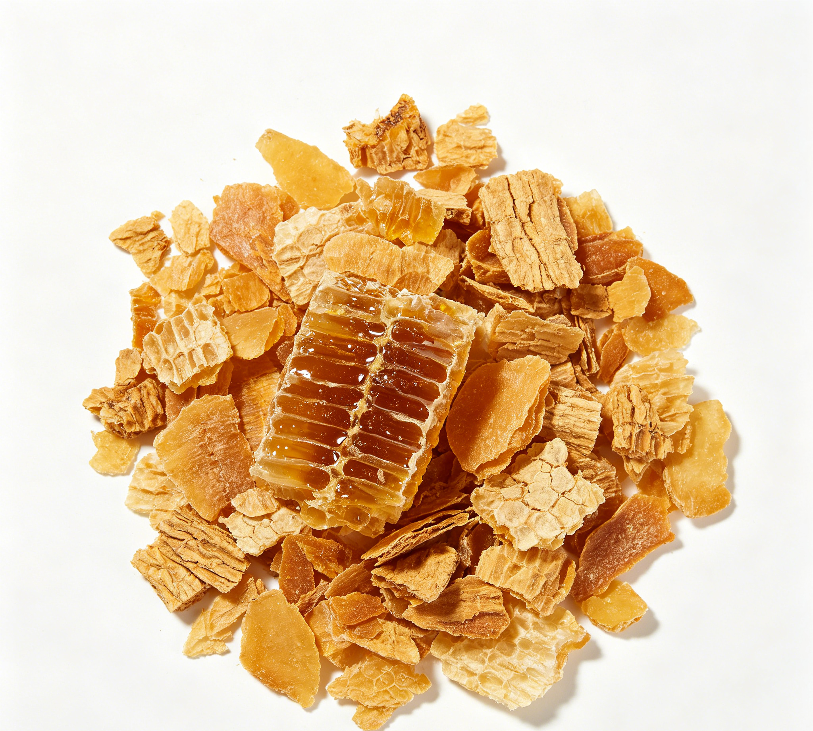

📋 基本信息
中文名蜂蜜
拉丁名Apis cerana Fabricius
英文名Honey
产地科：蜜蜂科（Apidae）；属：蜜蜂属（Apis）；来源：中华蜜蜂Apis cerana Fabricius或意大利蜂Apis mellifera Linnaeus所酿的蜜。全国各地均产，均为人工养殖生产，以广东、云南、福建、江苏、浙江等省产量较大；常见商品蜜种有洋槐蜜、枣花蜜、荆条蜜、荔枝蜜、油菜蜜等。
性状本品为半透明、带光泽、浓稠的液体，白色至淡黄色或橘黄色至黄褐色，放久或遇冷渐有白色颗粒状结晶析出。气芳香，味极甜。
相对密度 本品如有结晶析出，可置于不超过60℃的水浴中，待结晶全部融化后，搅匀，冷至25℃，照相对密度测定法（通则0601）项下的韦氏比重秤法测定，相对密度应在1.349以上。【《中国药典》2020年版一部】
用法用量15～30g。【《中国药典》2020年版一部】
贮藏置阴凉处。【《中国药典》2020年版一部】
☯ 传统属性
四气平
五味甘
归经肺、脾、大肠经
功能主治补中，润燥，止痛，解毒；外用生肌敛疮。用于脘腹虚痛，肺燥干咳，肠燥便秘，解乌头类药毒；外治疮疡不敛，水火烫伤。【《中国药典》2020年版一部】
禁忌症痰湿内蕴、中满痞胀及大便不实者不宜多食；1岁以下婴儿禁用（有肉毒杆菌中毒风险）；糖尿病患者应控制食用量。【《中药大辞典》及食品安全文献】
毒性常规食用安全性高。过量食用可致血糖升高、能量过剩引起肥胖；婴儿食用有感染肉毒杆菌中毒风险；储存不当或受热可使5-羟甲基糠醛升高；长期大量食用增加龋齿风险；极少数人对蜂产品过敏，可致皮疹、呼吸困难等过敏反应；掺假蜂蜜（掺蔗糖、果葡糖浆等）无蜂蜜应有的营养价值。
适宜体质气虚质、平和质、阴虚质、湿热质
适宜证型气虚证、脾胃气虚证、阴虚证、肺阴虚证
🔬 现代研究
主要成分主要成分为糖类：果糖和葡萄糖合计约占总糖的85%～95%（药典规定两者总量不得少于60.0%），另含少量蔗糖、麦芽糖及寡糖；水分约17%～25%。尚含多种酶类（转化酶、淀粉酶、葡萄糖氧化酶、过氧化氢酶、酯酶等）、有机酸（葡萄糖酸、柠檬酸、苹果酸等）、氨基酸、维生素（B族、C、K等）、矿物质（钾、钙、镁、铁等）、黄酮及酚酸类化合物、乙酰胆碱、挥发油及少量花粉、蜡质等。蜜源植物不同，成分与色泽气味有差异。
药理作用现代研究表明：①抗菌：蜂蜜高渗透压、含过氧化氢及甲基乙二醛等抗菌因子，对多种细菌和真菌有抑制作用；②促进创面愈合：外用可保持创面湿润、减轻炎症、促进肉芽组织生长，用于烧烫伤及溃疡；③镇咳：多项临床研究及WHO相关文件提示蜂蜜可缓解儿童上呼吸道感染引起的咳嗽；④润肠通便：促进肠蠕动；⑤抗氧化、抗炎：酚酸和黄酮类成分清除自由基；⑥调节肠道菌群，具益生元样作用；⑦保肝、增强免疫等作用亦有报道。
食疗功效传统食疗认为蜂蜜能补中缓急、润肺止咳、润肠通便、解毒。民间常用蜂蜜水缓解肠燥便秘；蜂蜜蒸梨、蜜炙萝卜用于肺燥干咳；蜂蜜配牛奶助眠安神；外敷用于轻度烫伤、疮疡。又为传统药膳常用矫味剂与滋补辅料（蜜丸、蜜膏、蜜炙饮片）。
食养禁忌
🏭 产品形态与潜在功能
推荐形态
粉末胶囊提取物
潜在功能